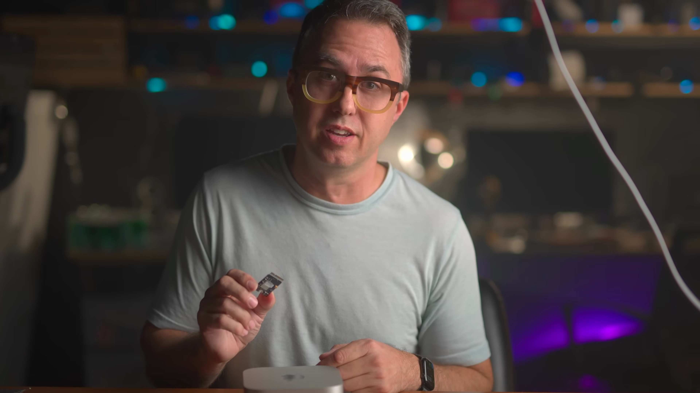
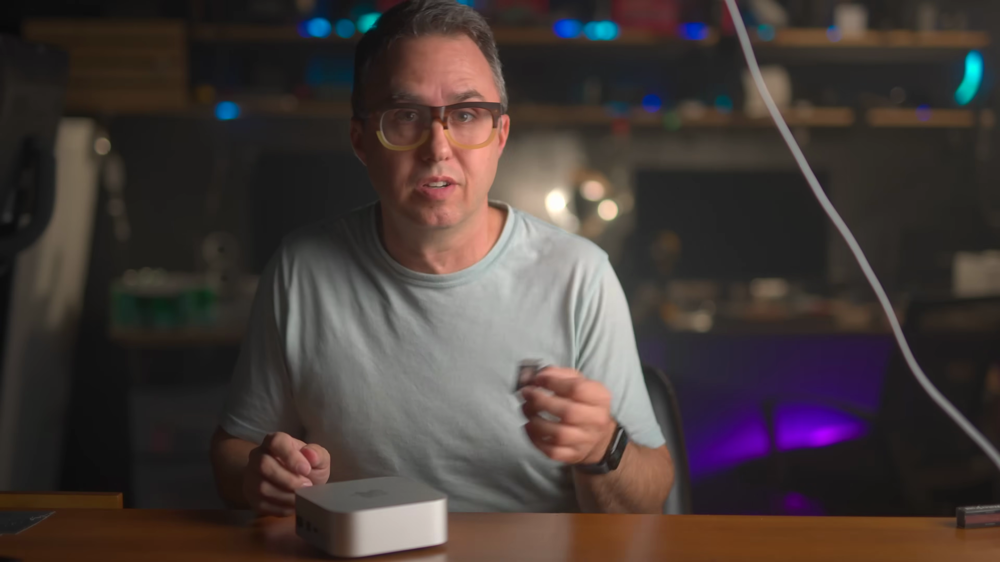
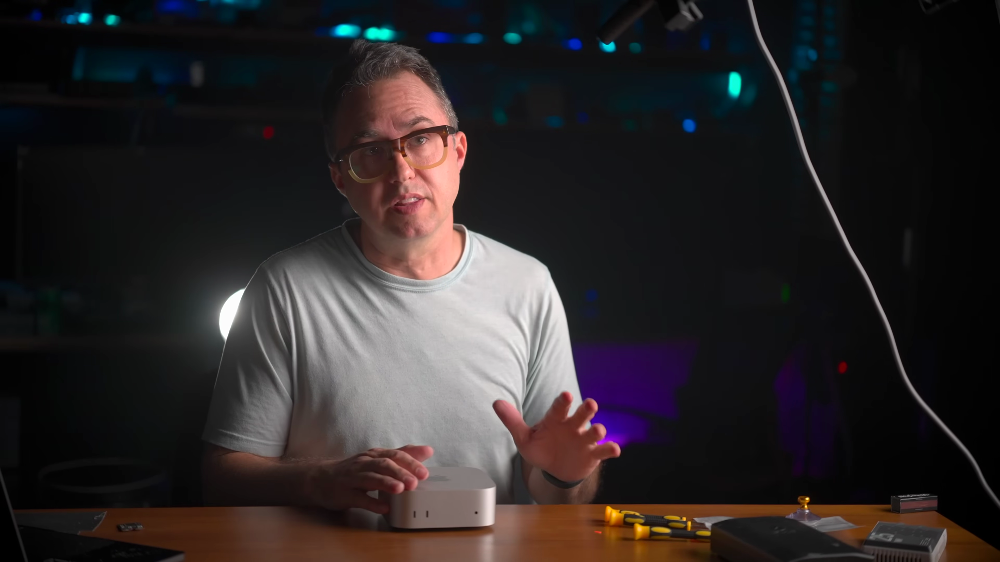
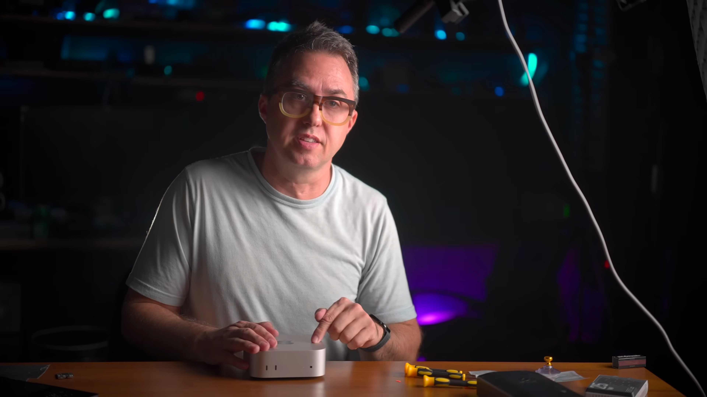

이 포스팅에서는 M4 Mac Mini SSD 교체에 대한 자세한 가이드와 유용한 정보를 제공합니다. 업그레이드 절차, 비용 효율성, 성능 향상 등 모든 것을 다룹니다.
M4 Mac Mini SSD 교체 소개
- 고급 SSD로 Mac Mini 성능 향상
- 비교적 간단한 교체 작업
- 장기적으로 비용 절감 효과
이 포스트에서는 M4 Mac Mini의 SSD를 업그레이드하는 방법에 대해 이야기합니다. SSD 교체로 인해 Mac Mini의 성능이 어떻게 향상될 수 있는지를 다룹니다.

SSD 교체의 중요성
- 저장 용량 늘리기
- 사용자 경험 개선
- 비용 대비 가치
SSD 교체는 단순한 하드웨어 업그레이드를 넘어 Mac Mini의 전반적인 성능과 사용자 경험을 개선하여 가성비를 높이는 중요한 작업입니다.

SSD 준비 과정
- 2TB SSD 준비
- SSD 종류와 제조사 확인
- 구매 사이트 소개
최신 SSD를 선택하는 것이 중요합니다. 이 포스트에서는 사용할 SSD의 유형과 신뢰할 수 있는 공급업체에 대한 정보를 제공합니다.
교체 작업 시작하기
- 백업 필요성 강조
- 필요한 도구 및 장비 소개
- Mac Mini 전원 끄기
SSD 교체 전, 데이터 손실 방지를 위해 Mac Mini의 백업을 반드시 진행해야 하며, 필요한 도구를 미리 준비해야 합니다.

Mac Mini 분해 방법
- 리본 케이블 주의
- T5 스크류 제거
- 내부 구조 이해
Mac Mini를 분해할 때 안전하게 리본 케이블을 다루고, 각 구성 요소에 접근하는 방법을 안내합니다.

새로운 SSD 설치
- 새 SSD 삽입 방법
- 기존 SSD 교체 과정
- 부품 조립 방법
기존 SSD를 제거한 후 새 SSD를 올바르게 설치하는 방법과 이후 조립 방법을 설명합니다.

펌웨어 업데이트
- DFU 모드 진입법
- Thunderbolt 케이블 연결
- 맥 리스토어 과정
새 SSD에 올바른 펌웨어를 설치하기 위한 과정과 복원 방법을 안내합니다.

성능 테스트 및 결과
- SSD 속도 측정
- 성능 향상 확인
- 사용자 경험 평가
업그레이드 후 새로운 SSD의 성능을 테스트한 결과를 공유하며, 실제로 얼마나 빨라졌는지를 보여줍니다.
Tags: #M4 Mac Mini #SSD 교체 #컴퓨터 업그레이드 #성능 향상 #가성비 컴퓨터